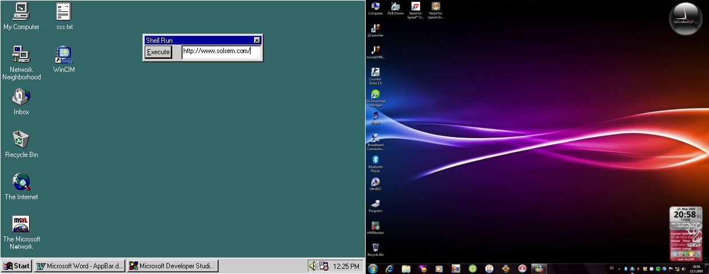
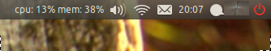
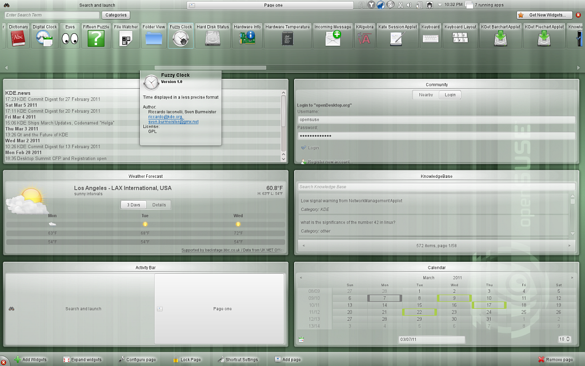
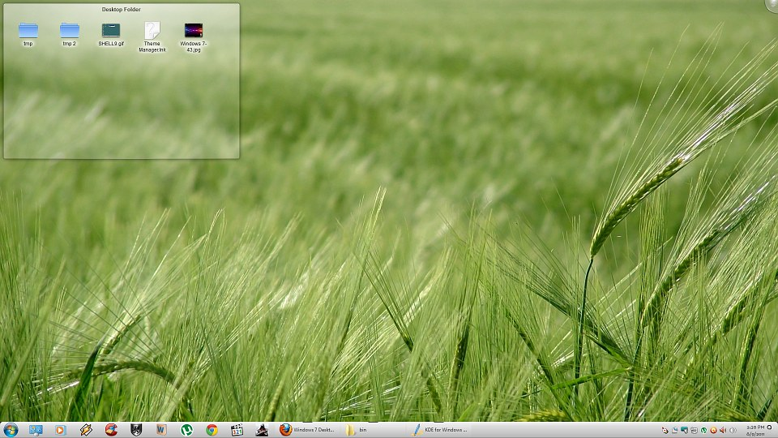

KDE for Windows
The computer desktop is an essential part of our computing experience. It is the starting point, the home page, the single point in space-time continuum that we can come back to. That’s all very good. But the Windows desktop looks old. Despite so many changes and developments in interface technology, we are still stuck with the same old desktop from Windows 95. The taskbar offers little improvement from previous versions. All we have is a Start button, active program list, pinned programs, and a system tray, which hides some useful functionality like adjusting volume. These kind of things should have become easy by now.

I’d have liked it if the desktops started acting more like those in smart phones, i.e, widgetized/realtime functionality. Just check any smartphone interface, be it HTC’s Sense or Samsung’s TouchWiz, or even Symbian’s widgeted interface. They use that space on the screen so efficiently. They either provide useful realtime information in a very readable manner (like time and date, news feeds, facebook updates…), or provide easy access to most used tasks in one click (or touch). Why hasn’t Windows done anything like that? Sure they have Gadgets, but they are little more than trinkets which are satisfied with being the auxiliary components instead of seizing the desktop.
In this department, the Linux community has made a lot of progress. Of course, I have no idea about iOS, mainly because I’ve never seen an iOS device in my life. Take Gnome for instance. It offers so many widgets and multiple taskbars for us to customize. We can populate the bars with useful trinkets like dictionary, quick search, multimedia controls, clipboard, copy stack, volume controls, and what not. Ubuntu, in particular, has integrated social network into it’s operating system.

How cool is that? And then there is KDE. It has made so many radical changes in it’s UI that the learning curve is rather steep. But it offers so much promise and it implements the added functionality I’ve been craving for. KDE is headed in the right direction, and I really wanted to try it out.

To that end, I installed openSUSE on my computer, but I guess I was too used to the look of the old explorer paradigm. I found the Gnome/Windows explorers more agreeable. In the end, I removed it because I was simply not using it too often.
I was looking for a Windows alternative to KDE’s Folder View widget, which essentially displays the contents of a selected folder in a nice panel on the desktop. This was so that I can remove clutter on my desktop and have easy access to all my frequently used locations, not to mention clear up desktop space for a more unrestricted and complete Rainmeter setup (more on this some other time). And guess what I found from the official makers of KDE: the KDE for Windows package! It enables one to run KDE applications in Windows alongside Windows Explorer and native Windows applications. What’s more, it allows us to use the KDE desktop over the Windows desktop (replaces the desktop area, not the taskbar).

I was pretty excited, and installed the required packages. Alas, it’s not perfect. The apps crash randomly, and messing around with the desktop widgets also crashes certain processes. It’s not as seamless as KDE on openSUSE, but it’s still something. The Folder View widget works, and it’s probably the only reason I downloaded this. But opening a folder opens it in the KDE explorer, not Windows explorer.
Oh well, it’s a start. There’s still a lot of exploring to do. I’ll write again when I make progress. Since KDE for Windows isn’t in it’s final stages of development, let’s hope that time fixes most of the glaring bugs.
On an other note, one other way to improve your desktop functionality (especially in terms of realtime information) is Rainmeter. Even if it has a slightly steep learning curve, it is just phenomenal. Take the Omnimo skin suite, for instance. It turns your desktop to a full on Windows Phone 7 desktop, with loads of functionality.
The only problem is handling the desktop icons. You’ll have to find a way to deal with them. But more on Rainmeter later.
Until next time.